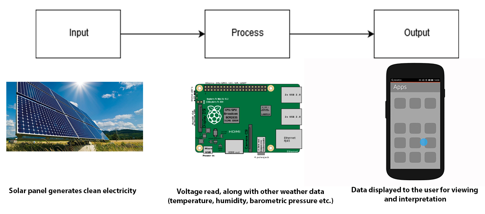
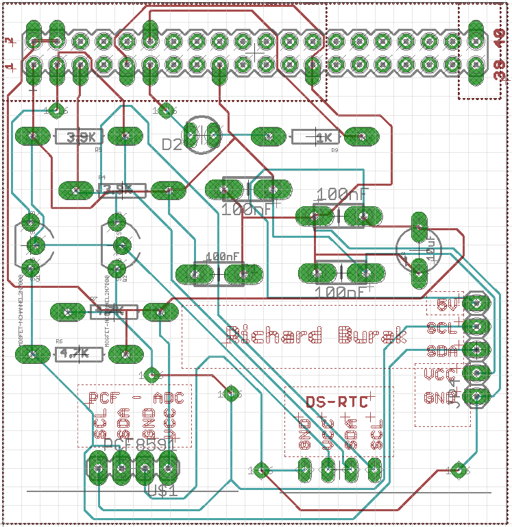
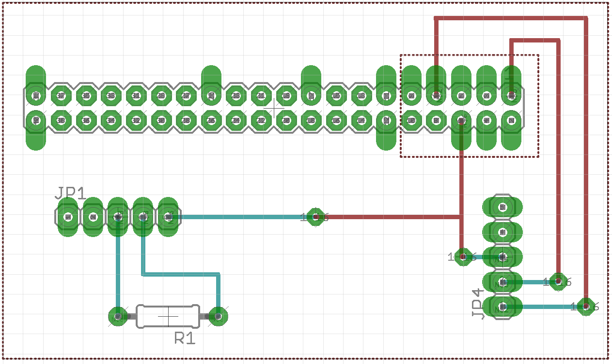
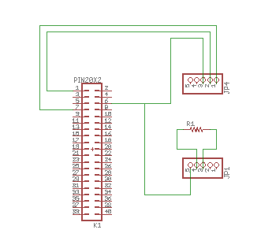
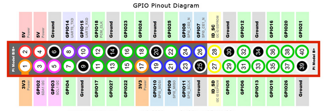

<style>
	.rotate90 {
    -webkit-transform: rotate(90deg);
    -moz-transform: rotate(90deg);
    -o-transform: rotate(90deg);
    -ms-transform: rotate(90deg);
    transform: rotate(90deg);
}
code { 
    background: hsl(30, 80%, 90%); 
}

pre {
    white-space: pre-wrap;
    background: hsl(30,80%,90%);
}
</style>

<ARTICLE ID="Article_1">
 <HEADER ID="Header_Article_1">
  <H2>Build - Solar Panel Project</H2>
 </HEADER>
 
 <SECTION ID="Section_13">
	<H3>i - Build Instructions - Intro</H3>
	<p>
		This page will host the intructions to build the solar panel project, which was designed by Salvatore Angilletta, Richard Burak (myself), and Steven Spiteri. It will describe how to reproduce our project,
		and anyone following this should be able to successfully replicate it.
	</p>
 </SECTION>
 
 <SECTION ID="Section_12">
	<H3>ii - System Diagram</H3>
	<p>
		First, the idea of the project must be understood. The goal is to read data from a solar panel, and then allow an easy means of viewing this data. This build instruction will show you how to display this data on the
		Raspberry Pi 3 and view it remotely through SSH and VNC. 
		 <br>
	</p>
 </SECTION>
 
 <SECTION ID="Section_11">
	<H3>iii - Budget and Materials</H3>
	<p>
		Required materials are listed in the table below. Some materials (soldering iron access, multimeter access, custom PCB, acrylic box) were available through Humber College, but an effort has been made to price these items.
		Using external sources to create the custom PCB and box may have varying prices, and quotes would be required on a personal basis. More detailed information about the pricing, as well as a list of more materials/tools 
		that may be used can be found in the budget Excel files hosted on this website. An important thing to note is the required access to a desktop computer, and a network. A keyboard/mouse along with an HDMI display are required
		to setup the Raspberry Pi 3, and the network is required to update the Pi and remotely access it.
	</p>
	<table>
	  <tr>
		<th>Item</th>
		<th>Quantity</th>
		<th>Individual Item Cost</th>
		<th>Web Link</th>
	  </tr>
	  <tr>
		<td>Raspberry Pi 3 Kit</td>
		<td>1</td>
		<td>$119.99</td>
		<td> <a href="https://www.amazon.ca/CanaKit-Raspberry-Ultimate-Starter-Kit/dp/B01CCF9BYG/ref=sr_1_3?ie=UTF8&qid=1474395691&sr=8-3&keywords=raspberry+pi">Link</a></td>
	  </tr>
	  <tr>
		<td>Barmetric Pressure Sensor</td>
		<td>1</td>
		<td>$8.33</td>
		<td> <a href="http://www.robotshop.com/ca/en/octopus-barometric-pressure-sensor-brick.html">Link</a></td>
	  </tr>
	  <tr>
		<td>DHT-11 Sensor Breakout</td>
		<td>1</td>
		<td>$4.04</td>
		<td> <a href="http://www.robotshop.com/ca/en/electronic-brick-humidity-temperature-sensor.html">Link</a></td>
	  </tr>
	  <tr>
		<td>6V Solar Cell</td>
		<td>1</td>
		<td>$34.93 ($10 at <a href="http://sayal.com/zinc/index.asp">Sayal)</a></td>
		<td> <a href="https://www.amazon.ca/Radio-Shack-50mah-Solar-277-1205/dp/B002XV3HFE/ref=sr_1_1?ie=UTF8&qid=1480736805&sr=8-1&keywords=6v+solar+cell+radioshack">Link</a></td>
	  </tr>
	  <tr>
		<td>Safety Glasses</td>
		<td>1</td>
		<td>$5.04</td>
		<td> <a href="https://www.amazon.ca/Pyramex-Mini-S2510SN-Safety-Glasses/dp/B000NP5D3G/ref=sr_1_4?ie=UTF8&qid=1480724554&sr=8-4&keywords=safety+glasses">Link</a></td>
	  </tr>
	  <tr>
		<td>Lead Free Solder (10g)</td>
		<td>1</td>
		<td>$4.49</td>
		<td> <a href="http://www.robotshop.com/ca/en/lead-free-solder-wire-10g-tube.html">Link</a></td>
	  </tr>
	  <tr>
		<td>Soldering Iron (25W)</td>
		<td>1</td>
		<td>$6.80</td>
		<td> <a href="http://www.robotshop.com/ca/en/elenco-sr-1-standard-25w-pencil-soldering-iron.html">Link</a></td>
	  </tr>
	  <tr>
		<td>Soldering Iron Holder</td>
		<td>1</td>
		<td>$4.56</td>
		<td> <a href="http://www.robotshop.com/ca/en/elenco-soldering-iron-holder.html">Link</a></td>
	  </tr>
	  <tr>
		<td>5-pin PCB Header (female)</td>
		<td>2</td>
		<td>$0.89</td>
		<td> <a href="http://www.digikey.ca/product-detail/en/sullins-connector-solutions/PPTC051LFBN-RC/S6103-ND/807239">Link</a></td>
	  </tr>
	  <tr>
		<td>2x20 GPIO Header</td>
		<td>1</td>
		<td>$9.99</td>
		<td> <a href="https://www.amazon.ca/GPIO-Stacking-Header-Pi-Extra-long/dp/B00TW0W9HQ/ref=sr_1_2?ie=UTF8&qid=1480734825&sr=8-2&keywords=gpio+header">Link</a></td>
	  </tr>
	  <tr>
		<td>Humber PCB Components Kit</td>
		<td>1</td>
		<td>~$40.00</td>
		<td>N/A</td>
	  </tr>
	  <tr>
		<td>Custom PCB</td>
		<td>1</td>
		<td>Unknown</td>
		<td>N/A</td>
	  </tr>
	  <tr>
		<td>Laser-cut Acrylic Box</td>
		<td>1</td>
		<td>Unknown</td>
		<td>N/A</td>
	  </tr>
	  <tr>
		<td>Digital Multimeter</td>
		<td>1</td>
		<td>$14.59</td>
		<td> <a href="http://www.robotshop.com/ca/en/m-1000e-compact-digital-multimeter.html">Link</a></td>
	  </tr>
	  <tr>
		<td>M2.5 Screws/Standoffs</td>
		<td>4</td>
		<td>$11.99 (Bulk)</td>
		<td> <a href="https://www.amazon.com/HVAZI-Standoff-Stainless-Assortment-Male-Female/dp/B01L06CUJG/ref=sr_1_5?s=industrial&ie=UTF8&qid=1480722221&sr=1-5&keywords=m2.5+screws">Link</a></td>
	  </tr>
	</table>
 </SECTION>
 
 <SECTION ID="Section_11b">
	<H3>iv - Time Commitment</H3>
	<p>
		This project has been worked on throughout my 5th Semester at Humber College, and in the end will take me about 15 weeks to complete. With these instructions, the time required should be cut down significantly,
		and the research and setup has taken up most of my time. The table below shows the approximate time required to perform each task. This project could be completed in less than a month, even with a busy schedule.
	</p>
	<table>
		<tr>
			<th>Task</th>
			<th>Time Required (Approx.)</th>
		</tr>
		<tr>
			<td>Ordering Parts</td>
			<td>1 hour</td>
		</tr>
		<tr>
			<td>Parts Delivery</td>
			<td>2 weeks</td>
		</tr>
		<tr>
			<td>Raspberry Pi 3 Setup</td>
			<td>2 hours</td>
		</tr>
		<tr>
			<td>Printing PCBs</td>
			<td>N/A</td>
		</tr>
		<tr>
			<td>Soldering PCBs</td>
			<td>3 hours</td>
		</tr>
		<tr>
			<td>Testing PCBs</td>
			<td>30 minutes</td>
		</tr>
		<tr>
			<td>Unit Testing Sensors</td>
			<td>2 hours</td>
		</tr>
		<tr>
			<td>Connecting Circuits</td>
			<td>10 minutes</td>
		</tr>
		<tr>
			<td>Laser-cutting Box</td>
			<td>10 minutes</td>
		</tr>
		<tr>
			<td>Box Assembly</td>
			<td>N/A</td>
		</tr>
		<tr>
			<td>Mount project in box</td>
			<td>5 minutes</td>
		</tr>
	</table>
	<p>
		The tasks above are recommended to be completed in order, but do not necessarily have to. The step-by-step guide will go in the order of the above tasks.
	</p>
	<p>
		First you must order the required parts. It is preferable that the parts are the same as the ones linked above, but any compatible part can be used. It could take up to 2 weeks for parts to arrive, but they can arrive at
		any timne after ordering. Digi-Key items arrived in less than 24 hours, while some other items took over a week. It is best to order everything at once to ensure all the required materials are together. Once the
		Raspberry Pi 3 arrives, you may begin Step 1.
	</p>
 </SECTION>
 
 <SECTION ID="Section_10">
	<H3>Step 1: Raspberry Pi Setup</H3>
	<p>
		Once the Raspberry Pi 3 has arrived, begin by connecting it to a display. Next, connect the keyboard and mouse. You can now plug the Pi into power and begin configuring the Raspbian OS. The setup will be explained on
		screen, and you may begin using the Pi once it has completed.<br>
		In the top right-hand corner of the screen, select the network you want the Pi to automatically connect to when it boots up (skip this step if the device is using a wired connection). Be sure to make note of the IP address,
		as it is required later to remotely connect to the device. The IP can be found by hovering the mouse over the WiFi symbol on the top-right.<br>
		Once connected to the internet, open the command line terminal and run the following command:<br> 
		<pre><code> sudo apt-get update</code></pre>
		This will update th Pi to the most recent version. This is important, as security updates are required to keep the device safe.<br>
		Next, SSH must be enabled by default, otherwise you will not be able to remotely access the Pi. To ensure SSH starts when the Pi is botted up, run this in the command line:<br><br>
		<pre><code> mv /boot/boot_enable_ssh.rc /boot/boot.rc</code></pre>
		Now that SSH is enabled, VNC must be installed and enabled. VNC allows users to navigate the GUI of the Pi remotely. To install this, run the following commands:<br><br> 
		<pre><code> sudo install tightvncserver
 tightvncserver</code></pre>
		Setup a password for VNC when asked. You will now be able to run VNC server by accessing the Pi through SSH, then interface using any VNC client.<br>
		To prepare the Pi for use with the sensors, I2C must be enabled. To do this, start by running the following command:<br><br>
		<pre><code> sudo raspi-config</code></pre>
		Use the arrow keys to navigate to advanced options and hit enter. Once there, navigate to I2C and hit enter again. Select "Yes" to have I2C enabled on the Pi.<br>
		Next, we must prepare the Python program used to interface with the sensors. The program below (solar.py) will show the data gathered by the sensors in the circuit. It will not successfully run
		until all the sensors have been successfully connected.<br>
		<a href="../BuildFiles/solar.py">Download - solar.py</a><br>
		Simply place the file in any directory on the Pi.
	</p>
	<p>
		With the Pi now configured, we can move on to the hardware part of this project.
	</p>
 </SECTION>
 
 <SECTION ID="Section_9">
	<H3>Step 2: PCB Soldering/Testing</H3>
	<p>
		The main PCB that holds the I2C circuits, called the Modular Sensor Hat, was provided by Humber College. The board must first be printed, and the components aquired (from the Prototype Lab in J building).
		Solder the components provided according to the Eagle .brd and .sch files. Be sure to wear safety glasses while soldering, and consider all aspects of your own (and others') safety. (Also remember to change my
		name to yours, for that personal touch!)
		<a href="../BuildFiles/HSHV4-student version.brd">Download - Modular Sensor Hat, EAGLE Board File</a><br>
		<a href="../BuildFiles/HSHV4-student version.sch">Download - Modular Sensor Hat, EAGLE Schematic File</a><br>
		<br>
		<br>
		Caution: There is a problem with the Modular Sensor Hat, I have included a quote from our instructor regarding the problem below.
		<blockquote>
			<i> 
				"RTC module can charge the CR2032 battery causing damage. To permanently disable the charging circuit, please remove the 200 ohm surface mount resistor near the unused I2C header by 
				pushing it off the PCB with a hot soldering iron."
			</i>
		</blockquote> 
	</p>
	<p>
		Next, the addition custom PCB must be printed and soldered. The materials required for this step are as follows:
		<ul>
			<li>10K Resistor (From Pi Starter Kit)</li>
			<li>5-pin Header (x2)</li>
			<li>2x20 pin GPIO Header</li>
			<li>Short pieces of 22 gauge wire (x3)</li>
		</ul> 
		<a href="../BuildFiles/solarpanel2.brd">Download - Custom PCB, EAGLE Board File</a><br>
		<a href="../BuildFiles/solarpanel2.sch">Download - Custom PCB, EAGLE Schematic File</a><br>
		<br>
		<br>
		Looking at the board above, be sure to insert the GPIO header from the bottom of the board, and the 5-pin headers from the top. The 3 short wires are required for the vias (which connect the top and bottom of
		the board). Also, make sure to solder the top-left end of the GPIO header, to ensure it is sturdy and does not move around.
	</p>
	<p>
		The final step with the boards is to ensure all the connections are working before connecting them. If faulty boards are connected to sensors (or the Pi) they can cause permanent damage to either. Save youself time 
		(and money) by making sure they work before continuing. To do this, power and ground the boards first. Apply 3.3V to pin 1, and ground pin 6. Now we need the digital multimeter. Connect the multimeter to the same
		ground as the Pi, and use the other connection to probe the different parts of the circuit. Measure both resistance and voltage, to make sure the values are correct. If any problems are detected, resoldering may
		be required.<br>
		<br>
		<i><a href="http://raspberrypi.stackexchange.com/questions/40318/raspberry-pi-2-can-gpio-pins-29-40-be-used-gpio-gen-input-output-configurable-in">Credit for image.</a></i>
	</p>
	<p>
		If the boards pass all the tests, then you are ready to move on to Step 3.
	</p>
 </SECTION>
 
 <SECTION ID="Section_8">
	<H3>Step 3: Unit Testing Sensors</H3>
	<p>
		To test the sensors, first connect the Modular Sensor Hat to your Raspberry Pi. Next, connect the barometric pressure sensor to the 4-pin header labelled "DS-RTC", making sure to match the labels on the board 
		and breakout. Next, connect the YL-40 board provided in the Humber components pack to the neighbouring 4-pin header labelled "PCF - ADC", also making sure to match the labels.<br>
		Back on the Raspberry Pi, run the following command to test the connection to the sensors: 
		<pre><code> i2cdetect -y 1</code></pre>
		The output should be as below. This mean that the sensors are being read by I2C on the Pi.
		<pre><code>      0  1  2  3  4  5  6  7  8  9  a  b  c  d  e  f
 00:          -- -- -- -- -- -- -- -- -- -- -- -- -- 
 10: -- -- -- -- -- -- -- -- -- -- -- -- -- -- -- -- 
 20: -- -- -- -- -- -- -- -- -- -- -- -- -- -- -- -- 
 30: -- -- -- -- -- -- -- -- -- -- -- -- -- -- -- -- 
 40: -- -- -- -- -- -- -- -- 48 -- -- -- -- -- -- -- 
 50: -- -- -- -- -- -- -- -- -- -- -- -- -- -- -- -- 
 60: -- -- -- -- -- -- -- -- -- -- -- -- -- -- -- -- 
 70: -- -- -- -- -- -- -- 77</code></pre>
	</p>
	<p>
		To test the Solar Cell, simply connect it to a multimeter and measure how much voltage is being generated. Try covering it and moving it closer to light to see if the readings varry. Finally, to test the DHT-11,
		connect it to the Pi's GPIO. Make sure to correctly connect ground and power, as the DHT is fragile. Connect the pin labelled 'S' to pin 7 of the GPIO (refer to the above image for the pinout). In the solar.py 
		file, comment out lines 26-32. This will mean that only the DHT will be read from. Run the program using:<br>
		<pre><code> python solar.py</code></pre>
		If the DHT is functioning, then readings will appear on screen, otherwise the program will fail to run.
	</p>
	<p>
		If all of the sensors are functioning, you are ready to connect the circuit in Step 4.
	</p>
 </SECTION>
 
 <SECTION ID="Section_7">
	<H3>Step 4: Connecting the Circuit</H3>
	<p>
		In this step, the mechanical assembly will be complete. The components required here are:
		<ul>
			<li>Raspberry Pi 3</li>
			<li>Modular Sensor Hat</li>
			<li>Custom PCB</li>
			<li>DHT-11 Humidity & Temperature Sensor</li>
			<li>BMP180 Barometric Pressure Sensor</li>
			<li>YL-40 Breakout Board</li>
			<li>6V Solar Cell</li>
			<li>Male-to-female Prototyping Wire (From Pi Starter Kit)</li>
		</ul> 		
	</p>
	<p>
		To assemble the project, follow these steps:
		<ol>
			<li>Disconnect the Raspberry Pi from power</li>
			<li>Connect the BMP180 and YL-40 to the Modular Sensor Hat, the same way when you were testing</li>
			<li>Install the Modular Sensor Hat on the Raspberry Pi 3 GPIO header. Connect it so that the Sensor Hat hovers over the Pi, and does not extend beyond it</li>
			<li>Stack the Custom PCB with the Sensor Hat. This time, make sure the Custom PCB hangs over the edge of the Pi, and does NOT hover over the Sensor Hat </li>
			<li>Look at the Custom PCB board file. Connect the DHT-11 to the right-hand 5-pin header. Looking at the DHT-11 breakout board, make sure that the pins go into the correct header input. 
				Make sure it is properly inserted by following the traces to the GPIO header (G to pin 6, V to pin 1, S to pin 7)</li>
			<li>Connect the Solar Cell to the left-hand 5-pin header. The black wire (ground) should plug into the right-most pin (which is connected to GPIO pin 6). The red wire can connect
				to either pin connected to the 10K resistor</li>
			<li>Connect the male end of the prototyping wire to the remaining resistor-connected pin. This will be used to probe the Solar Cell. The female end should connect to AIN2 on the
				top of the YL-40, which leads to an analog-to-digital converter.</li>
		</ol>
		That's it! Double-check the connections to make sure they are correct. Once you are sure, power up the Pi. Once the Pi has booted up, edit the solar.py file again, removing the comment you made
		in Step 3. Run the program again, and you should see a flow of readings on the screen. It works! (I hope). You should see the LED on the Sensor Hat light up green when everything is working fine. If it lights
		up red, that means a sensor is not connected properly. With a functioning piece of hardware, it is time to make a nice box to put it in.
	</p>
 </SECTION>
 
 <SECTION ID="Section_6">
	<H3>Step 5: Box Creation & Final Assembly</H3>
	<p>
		Below is the design of the box, that will be laser-cut from acrylic.<br>
		<a href="../BuildFiles/BOX">Download - Solar Project Box (BROKEN)</a><br>
		<br>
		It is recommended that clear 3mm acrylic is used for the process, but any colour/transparency can be used. To print my box, I used Humber's Prototype Lab, and the helpful staff setup and laser-cut the box
		for me. It is recommended that you go to them, or find another professional service, to have the box cut.
	</p>
	<p>
		Once the box has been cut, use acrylic glue to put everything (except the top!) together. Be careful when using the glue, as it may contain harmful chemicals. Once everything has dried, you may begin to mount the 
		Raspberry Pi in the box. 
	</p>
	<p>
		The M2.5 kit is required for this step, and you will make sure the Raspberry Pi is mounted on the standoffs with its IO ports facing the cutouts provided. Before securing the Pi, remove
		the Modular Sensor Hat from the Pi. Make sure the Pi is securely mounted (but not too tight) before reconnecting the circuit. Briefly disconnect the Solar Cell, and reconnect it by feeding the red and black wire
		through the holes in the side of the box. The Solar Cell must rest outside of the box to make sure it generates optimal power. Now just put the top on (do not glue) and you are all done! The Solar Panel Project
		has been built! 
	</p>
 </SECTION>

 <SECTION ID="Section_5">
	<H3>v - Conclusion</H3>
	<p>
		By following this guide, you should be able to reproduce this project with relative ease. While the current construction and parts are great for small scale use
		and production (student projects, prototyping), but improvements can be made tht can make production cheaper and quicker.
	</p>
	<p>
		The Modular Sensor Hat was provided as a general IO board, containing componenets that can be used for many different sensors and applications. This can be
		scaled down and combined with the Custom PCB to reduce the amount of wasted PCB material and un-needed components. This will reduce the cost, time to produce, and 
		size of the project. Next, efforts can be made to get the components cheaper and separate. The Canakit Raspberry Pi Kit is expensive, and not all of the parts are 
		used. Finally, with the smaller scale of the project, the box can be made smaller. Again, smaller means less acrylic is used, and the cost is reduced. 
	</p>
 </SECTION>

 <SECTION ID="Downloads">
 <H3>Downloads</H3>
  <p>
    <a href="../Documents/Solar Project Budget, Richard Burak.xlsx">Download - Solar Panel Project Budget</a><br>
    <a href="../Documents/Solar Project Budget (Updated), Richard Burak.xlsx">Download - Solar Panel Project Budget (Updated)</a><br>
	<a href="../BuildFiles/solar.py">Download - solar.py</a><br>
	<a href="../BuildFiles/HSHV4-student version.brd">Download - Modular Sensor Hat, EAGLE Board File</a><br>
	<a href="../BuildFiles/HSHV4-student version.sch">Download - Modular Sensor Hat, EAGLE Schematic File</a><br>
	<a href="../BuildFiles/solarpanel2.brd">Download - Custom PCB, EAGLE Board File</a><br>
	<a href="../BuildFiles/solarpanel2.sch">Download - Custom PCB, EAGLE Schematic File</a><br>
	<a href="../BuildFiles/BOX">Download - Solar Project Box (BROKEN)</a><br>
  </p>
 </SECTION>

</ARTICLE>
